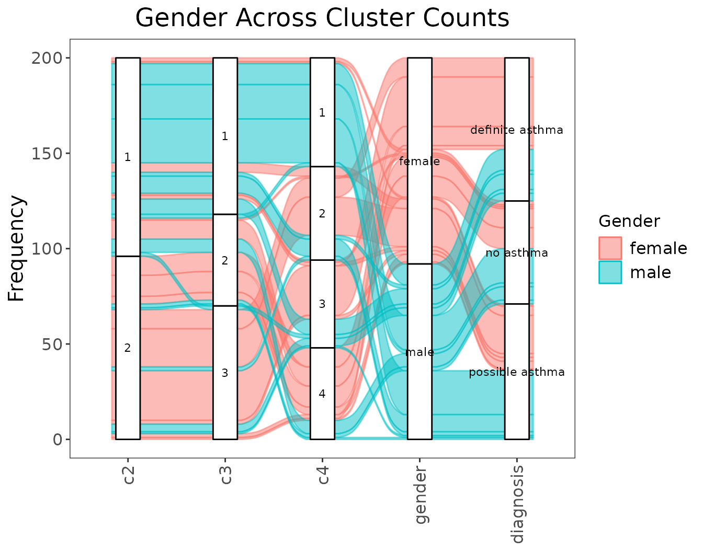
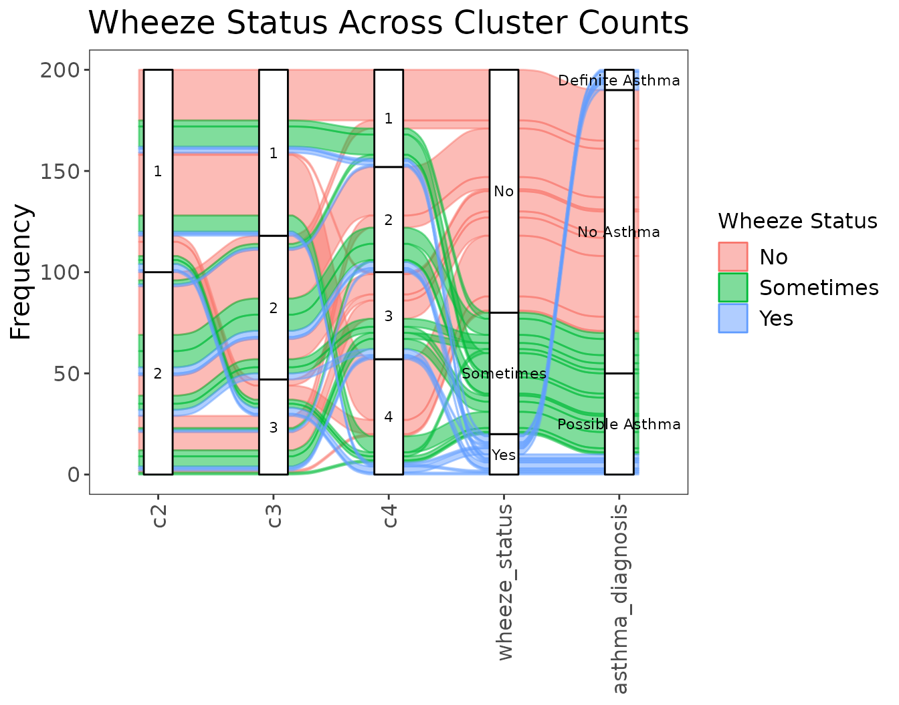

Download a copy of the vignette to follow along here: alluvial_plots.Rmd
Alluvial plots can be generated to visualize how changing the number of clusters influences the distribution of observations according to one (or a few) features of interest.
First, some data setup just as was done in the previous vignettes.
library(metasnf)
# Generate data_list
my_dl <- data_list(
list(
data = expression_df,
name = "genes_1_and_2_exp",
domain = "gene_expression",
type = "continuous"
),
list(
data = methylation_df,
name = "genes_1_and_2_meth",
domain = "gene_methylation",
type = "continuous"
),
list(
data = gender_df,
name = "gender",
domain = "demographics",
type = "categorical"
),
list(
data = diagnosis_df,
name = "diagnosis",
domain = "clinical",
type = "categorical"
),
uid = "patient_id"
)
set.seed(42)
my_sc <- snf_config(
my_dl,
n_solutions = 1,
max_k = 40
)## ℹ No distance functions specified. Using defaults.## ℹ No clustering functions specified. Using defaults.
sol_df <- batch_snf(
dl = my_dl,
sc = my_sc,
return_sim_mats = TRUE
)
sim_mats <- sim_mats_list(sol_df)
similarity_matrix <- sim_mats[[1]]Next, assemble a list clustering algorithm functions that cover the
range of the number of clusters you’d like to visualize. The example
below uses spectral_two to spectral_six, which
are spectral clustering functions covering 2 clusters to 6 clusters
respectively.
# Spectral clustering functions ranging from 2 to 6 clusters
cluster_sequence <- list(
spectral_two,
spectral_three,
spectral_four
)Then, we can either generate an alluvial plot covering our similarity
matrix over these clustering algorithms for data in a
data_list:
alluvial_cluster_plot(
cluster_sequence = cluster_sequence,
similarity_matrix = similarity_matrix,
dl = my_dl,
key_outcome = "gender", # the name of the feature of interest
key_label = "Gender", # how the feature of interest should be displayed
extra_outcomes = "diagnosis", # more features to plot but not colour by
title = "Gender Across Cluster Counts"
)
Or in an external data frame:
extra_data <- dplyr::inner_join(
gender_df,
diagnosis_df,
by = "patient_id"
) |>
dplyr::mutate(uid = paste0("uid_", patient_id))
head(extra_data)## patient_id gender diagnosis uid
## 1 660 female definite asthma uid_660
## 2 420 female possible asthma uid_420
## 3 252 female definite asthma uid_252
## 4 173 female no asthma uid_173
## 5 327 female definite asthma uid_327
## 6 245 female definite asthma uid_245
alluvial_cluster_plot(
cluster_sequence = cluster_sequence,
similarity_matrix = similarity_matrix,
data = extra_data,
key_outcome = "gender",
key_label = "Gender",
extra_outcomes = "diagnosis",
title = "Gender Across Cluster Counts"
)